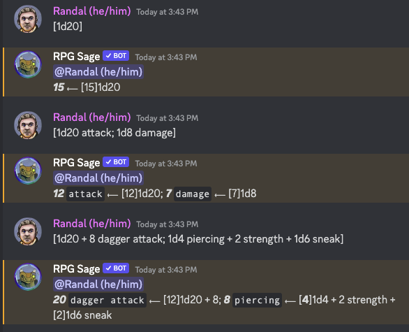
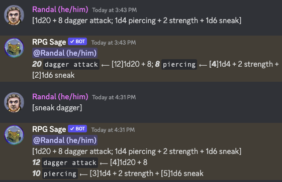
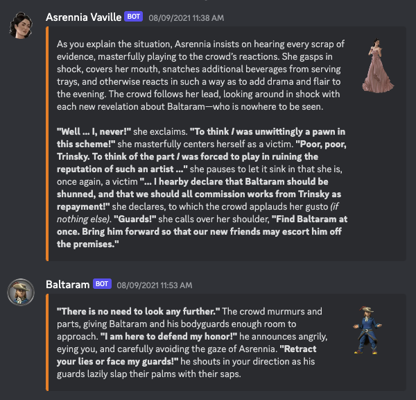
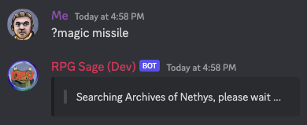
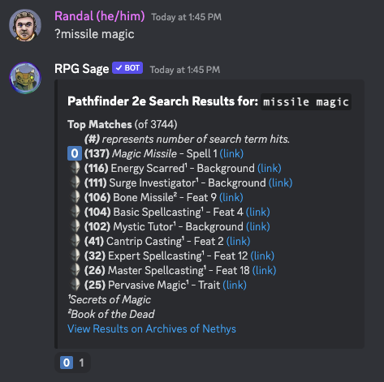
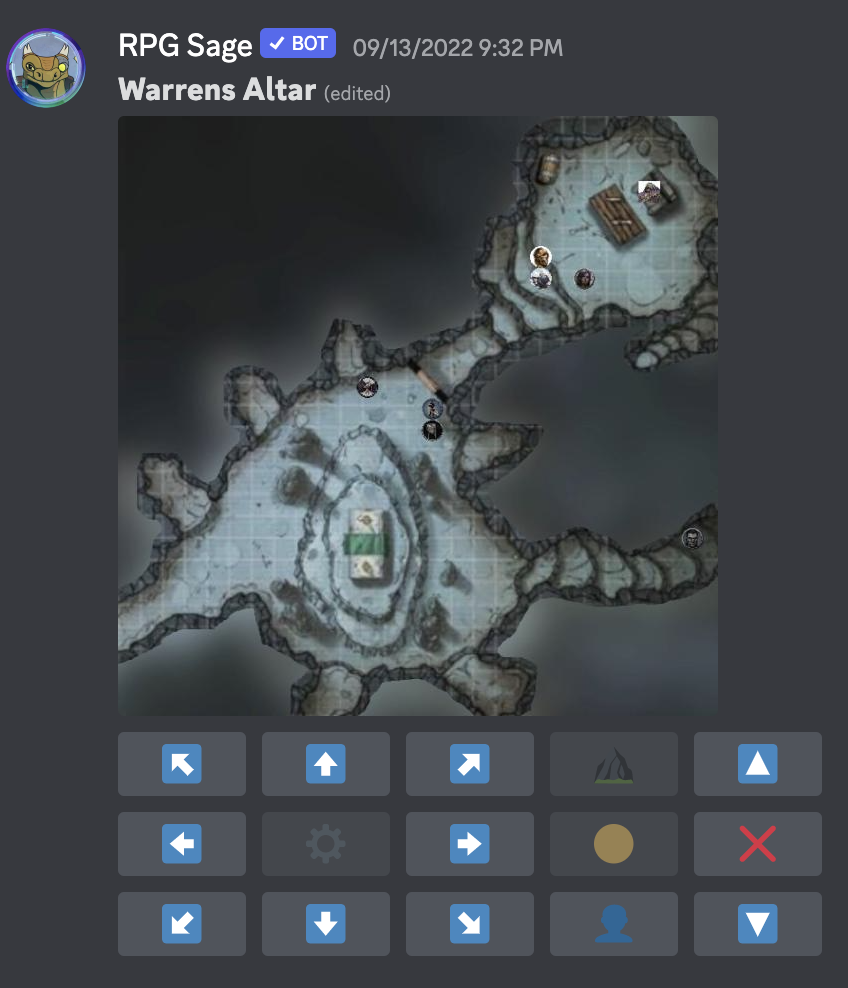

RPG Sage has a game system neutral core engine. This comes in the form of integrated dialog, dice, and game table mechanics. You can use RPG Sage with any game system you want or without a game system entirely!
RPG Sage's Dice Feature, at its most basic, it enables you to roll dice and post the results.
The simplest form of this is the humble [1d20] roll.
As you get more comfortable using it, you will find that you can enter multiple rolls (each with their own description) into a single dice command so that RPG Sage can group the results together to make it easier for your group to find and read dice rolls that belong together.
The most common form of this is the attack and damage roll combo of d20 games: [1d20 attack; 1d8 damage].
You can, of course, include modifiers to die rolls (even more dice types) and even give each modifier a description should you choose to.
For example, a common d20 rogue might roll [1d20 + 8 dagger attack; 1d4 piercing + 2 strength + 1d6 sneak].
Additionally, we have customized dice for multiple games that automate things like Pathfinder 2e MAP Multi Attack Penalty, critical success, and even deadly or fatal weapon damage!
You can see more information about using these here.

While this example shows the user only posting a dice rolls, RPG Sage will read entire messages and respond to all instances of dice rolls that it finds within each message.
Once you really start using dice rolls in RPG Sage, you will find that you wind up doing a lot of copy/paste actions. To alleviate this, we have implemented a fairly robust Macro Feature. At the basic level, dice macros allow you to avoid copying and pasting long dice commands by creating a short cut (called "macro").
Using our example above of a sneak attack, we can see that it would get annoying constantly typing (or even copy/pasting) [1d20 + 8 dagger attack; 1d4 piercing + 2 strength + 1d6 sneak] over and over.
By creating a macro named (conveniently and descriptively) "sneak dagger", we find it much more wieldy to use that attack roll on a regular basis by simply using [sneak dagger].
You can see more information about using these here.

Once configured, RPG Sage's dialog feature allows players and game masters to post as their characters with little more than starting their post with pc:: or gm::, and sometimes even less!
PC Dialog for Players
Players will generally post their dialog by using the pc:: command; posting as their Player Character for the current game.
PCs can also have alts, companions, familiars, hirelings, and more!
Once added to a PC, you would post as those other characters using their various dialog commands, such as alt:: or familiar::Fluffy Kitty::.
NPC Dialog for Game Masters
Game masters will generally post their dialog by using the npc:: command.
Because there are generally many NPCs to a Game Master (as opposed to one PC per Player) you must include the name of the NPC you are posting as, such as npc::Mayor Cogsgrove::.
For convenience, there is a built in NPC called "Game Master" that GMs can post as by simply using the gm:: dialog command.
You can see more information about using these here.

Yup, we said it, you can ask RPG Sage to look something up on Archives of Nethys and get a list of links to the top 10 (or so) results! We can even render quite a bit of content directly in Discord for you so that you don't always have to click that link and leave your chat to get the content for yourself or your group!
Note about content search.
Currently, we can only search content on Archives of Nethys for Pathfinder 1e, Pathfinder 2e, and Starfinder ... but we are always looking for ways to search content for more games!
Note about posting search results.
Currently, we can only post some things from Pathfinder 2e, but we plan to continue expanding the amount of content we can post directly.
When results are determined, if there is only one item that was returned for your search and the name is exactly what you searched for and we have the ability to post it directly, we will post it instead of returning a list of results.
Note about "search" vs "find".
By default, using sage?magic missile performs what we call "search"; it searches all the text of the content being searched. If you include an exclamation, for example sage?!magic missile, then RPG Sage will only consider the names of the items returned when it provides you with results.
When results are determined, if there is one item that was returned for your search with a name that is exactly what you searched for and we have the ability to post it directly, we will post it instead of returning a list of results.


Yes, you heard that right, we can do maps!
And all you have to do is create a metadata text file that has a name ending in .map.txt and then drop the file in the channel you want your map.
Sage will take it from there!
Note about prototype.
This feature is still a prototype, perhaps consider it an alpha release.
The interface and feedback aren't as clean as we want and the execution of features is a tad clumsy.
But, we assure you that we already have planned improvements that will make it much better!
Note about image storage.
RPG Sage doesn't store any images used in the creation of maps.
Therefore, you will need to make sure that they are all public urls that will be available until you are no longer using the map.
The simplest way to do this is to post the image(s) into a discord channel and then grab the url from the uploaded image(s).
You can see more information about using these here.
